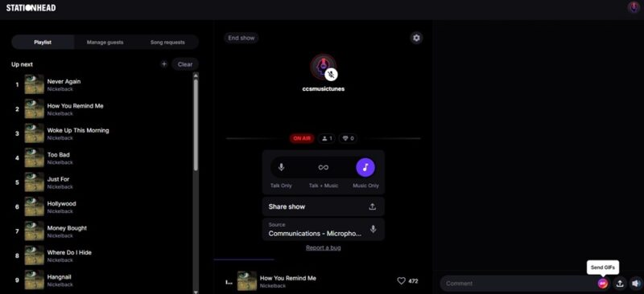

BTS 新专辑首发夜，我在 Stationhead 跟两万 ARMY 同步听了一整夜
以前等偶像发新专辑只能一个人戴耳机循环，直到朋友拉我进了 Stationhead——全世界的粉丝同时播放同一首歌、实时聊天、甚至艺人本人会空降粉丝直播间。这是我那次的完整经历。
去年十一月那个凌晨两点，我手机屏幕亮着 Spotify，单曲循环到第三遍的时候，微信突然炸了——BTS 的新专《Map of the Soul: 7》刚刚在所有流媒体平台同步解锁。
作为追了六年的 ARMY，这种时刻我经历过好几次，但每次的感受都差不多：一个人窝在被子里，耳机音量开到最大，等 track 列表滚完，然后翻微博看其他粉丝的反应。各听各的，各发各的，明明是几百万人同时在听，却像每个人都在自己的小房间里独处。
那天凌晨三点，我正准备切回第一首歌循环，一个很久没联系的高中同学突然发了条微信过来：「别一个人听了，进 Stationhead 的 Channel，两万 ARMY 已经在那同步等了。」
我当时根本没听过 Stationhead 这个名字，以为又是某个粉丝自建的 Discord 或者微信群，点他发的链接进去才发现不是——这是一个专门做同步音乐直播的 App，它的官网首页上赫然列着 BTS、BLACKPINK、SZA、Olivia Rodrigo 一长串艺人的名字。我去下载了 iOS 端，注册，连上自己已经用了两年的 Spotify Premium 账号——这个连接过程其实就是跳转到 Spotify 的授权页面点了一下确认，前后不到十秒。
两万粉丝同时听，每一首歌都是集体仪式
进到 BTS 的 Channel 时我才明白同学说的「同步」到底是什么意思。这个 Channel 不是某个主播的单一直播间，而是粉丝团的 24/7 永续空间——官方说叫 Syndication 联播机制，简单理解就是粉丝自建的 Station 被随机轮流调度，保证 Channel 里永远有正在直播的 Station，不会出现「没人在播」的尴尬。
那天凌晨，刚好有一个资深 ARMY 主播正在开 Release Party，歌单就是整张新专辑的 track 列表。我点进去的那一刻，手机里自动开始播放——而且是和直播间里两万个听众同一秒、同一位置的同步播放。主播在麦里说「三、二、一」，我听到的 Intro 前奏和所有人听到的分毫不差，聊天区里的弹幕「啊——」「又来催泪」「Jimin 的 part 我死了」同时刷了起来。
这种体验完全不是「各听各的然后开个语音」那种伪集体感。因为音乐本身是同步的，所以当主打歌的 MV 片段在 track 间短暂插入时，整个聊天区突然安静了两秒，然后像炸开一样涌出几百条「卧槽」——不是因为大家约好了，是因为所有人在同一个瞬间看到了同一个画面。
我试着自己开了一个 Station
听了四十分钟之后我手痒，自己也开了一个 Station。创建过程比想象中简单太多：选一首歌单，设置 Station 名称和封面，点「Go Live」就行。但我选的歌单有点冷门——是 BTS 成员 Solo 作品里的非主打合集，本来没指望有人来。
结果开播不到五分钟，就进来了三个人。一个说「终于有人开 Solo 合集了，等了半小时」，另外两个直接开麦想和我说话。我是个社恐，只敢打字回，但那种「陌生人因为同一个偏好聚到一起」的感觉还是让我有点上头。

最疯狂的那个瞬间：艺人真的空降了
第二天下午我又进了那个大 Release Party Station，主播说「昨天大家都在说的那个隐藏 track，我们单独再放一遍」。音乐放到一半，聊天区突然刷屏——有人发了一张截图，显示 BTS 的官方账号正在这个 Channel 里。
我一开始以为是 PS 的，结果主播的麦里突然传来一声不太清晰的韩语问候，然后是一个我听了六年的声音说「大家好，我是 J-Hope」。
整个聊天区炸了。有人在打「我死了我死了我死了」，有人在发 GIF（后来我知道那是 Stationhead+ 订阅才有的特权），有人直接打赏金币——那个瞬间的金币打赏速度快到聊天区被「XXX 送出 N 金币」的提示覆盖。
我后来才了解到，艺人随机空降粉丝自建 Station 是 Stationhead 独有的玩法——Spotify 和 Apple Music 永远不会给你这个。而且更神奇的是，我打赏的金币100% 归主播，平台一分钱都不抽——不像 Twitch 抽 50%、B 站抽 30%，这个 100% 分成模型让主播和粉丝之间的关系变得特别纯粹。
也遇到过问题，还好官方排障文档写得细
不过那天晚上也出过状况。我换了 AirPods 之后突然听不到音乐了，聊天还正常，但就是没声音。我以为是 Premium 过期了，检查了一下不是——后来想起有人提过类似问题，翻了一下文档，才知道蓝牙必须断开才能避免干扰。这是官方 FAQ 排障里的第一条建议，简单到我一开始没当回事，结果真就是这个原因。断开 AirPods 之后，音乐一秒就回来了。
还有一次我网络不好，音乐断断续续不同步，主播让我测一下网速再切 WiFi 和蜂窝数据试试——折腾了三分钟就好了。这些问题如果遇到了别慌，先去翻文档，大部分常见问题都有清晰的解决步骤。
写在最后：它不像一个 App，更像一个场所
到现在我用 Stationhead 快一年了，除了 BTS，还加入了 ZAYN 和 Camila Cabello 的 Channel。有时候下班回家累了不想说话，就挂在一个 Station 里当背景音乐，和几万人一起听一首歌——不需要互动，光是知道「此刻有很多和我一样的人在听」就够了。
它不是一个音乐播放器，也不是一个直播平台。它更像一个粉丝团的集体客厅——每个人带着自己的 Spotify 或 Apple Music 账号进来，坐下，听，聊，偶尔一起尖叫。
如果你也有一个追了很久的艺人，想试试「和几万人同时听一张新专辑」是什么感觉，不妨试试看，官网的注册流程很简单，连好流媒体账号就能直接用。我自己整理的这份使用笔记也同步放在了 GitHub、Gitee 和 GitCode 上，国内访问 Gitee 或 GitCode 会更快一些。